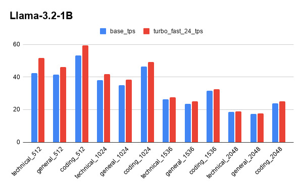
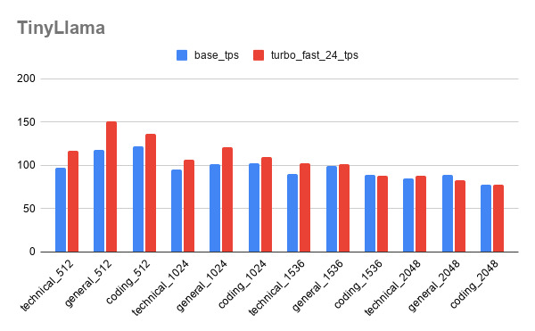
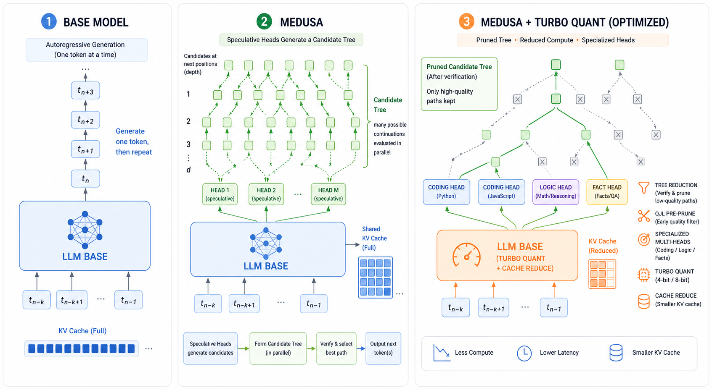
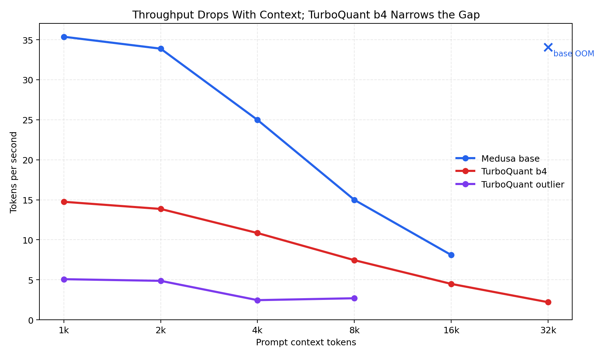
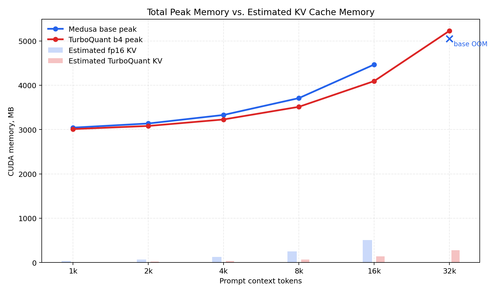
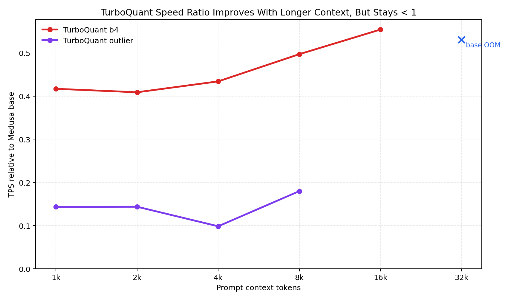

Motivation
Turbo Medusa's Minions: Task-Aware Heads and Turbo-Quantized KV Caches
Medusa reduces autoregressive latency with lightweight speculative heads, but long prompts expose three remaining bottlenecks: KV-cache memory growth, expensive full-tree verification, and generic heads that are not equally strong across coding, chat, reasoning, and summarization.
Muhammad Shaffan Ahmad (23i-0673)
Hamza Tariq (23i-0510)
SOTA Summary Table
| Work | Core idea | Relevance | Remaining gap |
|---|---|---|---|
| Speculative Decoding / Sampling | Cheap draft model proposes tokens; target verifies several at once. | Defines the draft-and-verify latency pattern. | Needs a strong draft model and extra model management. |
| SpecInfer | Speculative token trees verified in parallel. | Systems-level ancestor of tree verification. | Tree shape must match hardware and acceptance behavior. |
| Medusa | Attach multiple lightweight decoding heads to the target model. | Base implementation used in this project. | Fixed tree sizes and generic heads are not always optimal. |
| Hydra / EAGLE | Improve speculative quality via dependent heads or feature-level drafting. | Shows draft quality matters as much as verification mechanics. | Training and deployment complexity rise. |
| PagedAttention / vLLM | Block-based KV memory management for serving. | Reduces fragmentation and serving waste. | Does not compress the KV vectors numerically. |
| KVQuant / KIVI | Sub-4-bit KV-cache quantization using per-channel, pre-RoPE, outlier-aware, or asymmetric 2-bit layouts. | Sets strong SOTA baselines for long-context KV compression. | Accuracy and speed depend on metadata layout, calibration, and custom kernels. |
| PolarQuant / QJL / TurboQuant | PolarQuant removes scale overhead with polar transforms; QJL adds 1-bit unbiased residual correction; TurboQuant combines near-optimal quantization with QJL. | Most direct SOTA context for the TurboQuant-Medusa implementation. | Reported speedups require fused compressed-attention kernels; our path still decodes temporary dense K/V. |
Gap and Problem Statement
Gap
- Base Medusa helps decoding, but KV memory still scales linearly with context.
- A full 63/64-node verification tree can waste work when draft acceptance is not high enough.
- One generic speculative head pack underuses domain regularity, especially for coding and structured outputs.
Proposed Methodology
TurboQuant KV compression
Store K/V in a quantized representation using rotation, scalar quantization, per-token scale, and QJL residual metadata. Benchmark base Medusa vs TurboQuant across 1k to 32k context prompts.
Custom speculative trees
Sweep tree sizes and select the smallest tree that keeps acceptance and prefix match acceptable. Treat 63/64 nodes as a fallback, not a universal default.
Multi Minnions
Train small Medusa head packs, each for a niche such as coding, chat, law, or creative writing. Route prompts to the best head pack while keeping the base model fixed.
Why We Reduced the Tree From 64 Nodes to 24
Results: Custom Tree Size


| Model | 64-node/full max | 24-node/custom max | Interpretation |
|---|---|---|---|
| TinyLlama final sweep | 121.79 TPS | 151.17 TPS | 24-node custom tree reached the highest observed TPS, about 1.24x over full-tree max. |
| Llama-3.2 final sweep | 53.13 TPS | 59.60 TPS | 24-node custom tree reached the highest observed TPS, about 1.12x over full-tree max. |
| Quick calibration sweep | 108.40 TPS | 129.04 TPS | 24-node setting also won in the calibration run, about 1.19x over full-tree max. |

Results: TurboQuant on Long Context


| Context | Base TPS | Turbo b4 TPS | Base Peak | Turbo Peak | Base KV Cache | Turbo KV Cache | Finding |
|---|---|---|---|---|---|---|---|
| 16k | 8.10 | 4.49 | 4466.8 MB | 4093.0 MB | 504.3 MB | 137.9 MB | Turbo saves about 374 MB peak allocation. |
| 32k | OOM | 2.20 | OOM | 5227.5 MB | 1005.0 MB | 274.8 MB | TurboQuant completes where base Medusa OOMs. |
Results: Throughput and KV Cache With Context

KV Cache Size Detail
| Context | Base TPS | Turbo b4 TPS | Base KV Cache | Turbo KV Cache | Detail |
|---|---|---|---|---|---|
| 1k | 35.37 | 14.75 | 34.2 MB | 9.3 MB | Turbo cache is about 3.7x smaller. |
| 2k | 33.88 | 13.86 | 64.8 MB | 17.7 MB | KV cache grows with context length in both paths. |
| 4k | 24.98 | 10.84 | 127.6 MB | 34.9 MB | Turbo keeps the cache footprint much lower as attention cost rises. |
| 8k | 14.99 | 7.45 | 253.1 MB | 69.2 MB | Turbo saves about 183.9 MB of KV cache here. |
| 16k | 8.10 | 4.49 | 504.3 MB | 137.9 MB | Turbo saves about 366.4 MB of KV cache here. |
| 32k | OOM | 2.20 | 1005.0 MB est. | 274.8 MB | Base OOMs during prefill; TurboQuant still completes with a much smaller cache. |
Results: Multi Minnions
What it is
Multi Minnions keeps one base LLM and trains multiple cheap Medusa head packs, each specialized to a narrow domain. A router picks the head pack at inference time.
Conclusion
Main findings
- TurboQuant improves base Medusa's usable context capacity. It enabled 32k locally where base Medusa OOMed.
- Current TurboQuant is not faster yet because dense temporary decode remains in the path.
- Testing at larger context windows is still promising because KV-cache cost scales linearly with context, so TurboQuant's savings grow with sequence length and can translate into speedup once decode overhead is reduced.
- Custom tree size matters. Full 63/64-node trees are not consistently optimal.
- Multi Minnions is a promising training-side route for better acceptance and speedup.
Next engineering steps
- Fuse compressed KV attention to remove dense decode overhead.
- Add chunked prefill and 8-bit loading for 64k+ local experiments.
- Promote tree calibration into a default benchmark stage.
- Train and evaluate separate Minnion packs for coding, chat, and summarization.
References
- Fast Inference from Transformers via Speculative Decoding, Leviathan et al., 2023.
- Accelerating Large Language Model Decoding with Speculative Sampling, Chen et al., 2023.
- SpecInfer: Tree-based Speculative Inference and Verification, Miao et al., 2023.
- Efficient Memory Management for LLM Serving with PagedAttention, Kwon et al., 2023.
- Medusa: Simple LLM Inference Acceleration Framework with Multiple Decoding Heads, Cai et al., 2024.
- EAGLE: Speculative Sampling Requires Rethinking Feature Uncertainty, Li et al., 2024.
- Hydra: Sequentially-Dependent Draft Heads for Medusa Decoding, Ankner et al., 2024.
- KVQuant: Towards 10 Million Context Length LLM Inference with KV Cache Quantization, Hooper et al., 2024.
- KIVI: A Tuning-Free Asymmetric 2bit Quantization for KV Cache, Liu et al., 2024.
- QJL: 1-Bit Quantized JL Transform for KV Cache Quantization with Zero Overhead, Zandieh et al., 2024.
- PolarQuant: Quantizing KV Caches with Polar Transformation, Han et al., 2025.
- TurboQuant: Online Vector Quantization with Near-optimal Distortion Rate, Zandieh et al., 2025.